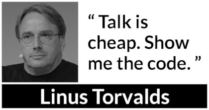

Adam Schaefers
1 About
This page tells the story of my journey in to professional computing.
I'm a Devops Engineer at Immaculata Studios where I spend most days automating the AWS world using Docker microservices and Terraform to help my team at scale.
The opinions here are my own and do not represent my company.
2 In the beginning…

My first computer was an XT, pre-loaded by dad with a boat load of cracked games, such as "Hopper." I learned DOS commands and batch scripts early on in this way, before GUI's were much of a thing.
I was running my own WAMP stacks and messing around with frameworks like "Php Nuke", "PhpBB" and exploring Geocities in Junior High. This was all mostly to make cool websites for my video game clans. 1
3 A self taught person – DIY ethics and Unix philosophy
au·to·di·dact: a self-taught person
I graduated High School in 2006. I was homeschooled before it was the cool thing to do. 2 My parents were very forward-thinking in this regard.
My father taught me that if you want something done right, then you need to do it yourself.
This comes in to play later on when I realized out that I could learn anything I wanted on the internet– that the original hacker spirit is the Unix Philosophy 3 with DIY ethos. 4
4 Security and Privacy piques my interest

It was around the time when Snowden5 was blowing the whistle on the government that I gained a renewed interest in tech. I always had a natural aptitude for computing– after all my first Linux distro was Ubuntu 8.04 Hardy Heron ~2008– but I was doing other things.
I rediscovered Linux and loved all of the cypher-punk feels. In those days one would have found me growing out my neckbeard whilst reverse SSH tunneling 10 servers deep before connecting to the TOR network (and every other privacy-centric network I could find.) I soon joined various IRC channels, where we would discuss merits of various Linux distros and open-source software for hours. It was just a hobby at first.
I started watching The Lunduke Show. I went to YouTube University, (I know better, to read the docs, now-a-days…), catching every TutoriaLinux (Dave Cohen) episode I could – I sent him a thank you Email years later along the lines, "Hey, thanks for sharing your knowledge." He replied back, too. Dave's a champ.
Admittedly, I used to rice my desktop back then. I used VIM like a pleb6 and apparently people still like my work in that regard.
5 Want to join a tech cult? There's pizza…

Did you even google it? RTFM dude… 7
Like any good cult, I have found that tech has its own jargon and can give you sense of identity. There are even holy wars. (See Vim vs. Emacs and Tabs vs. Spaces, as brilliantly demonstrated in the T.V. sitcom Silicon Valley. 8)
I started COOSLUG (Coos Bay, Oregon) L inux U ser G roup with my buddy Zeb DeOs, the only other Hacker I knew in the area. He's a prominent full stack developer and I owe this guy everything career-wise.
In a world where things are so often out of our control, the fact that we can program computers do exactly what we want is a strange comfort, and we shared this in common.
We met once a month or so and ordered pizza, with prolonged Emacs hacking sessions and candid discussions on the state of the industry.
6 The self-imposed bootcamp years – Learning to code

Imposter Syndrome is a funny thing. When you're feeling impostery you know that, "I'm good enough to be here and do this job." – but you don't feel that way on the inside. I felt like I had something to prove, and that I needed to be the best before I entered the field full-time in a paid gig. I suspect it stems from the ever-changing, ever-learning nature of tech.
At the time, I was on the computer 12 hours every day, studying.
I installed Arch Linux a hundred times, I nigh memorized the now infamous wiki –
FreeBSD, the same– and I actually read the Handbook.
I learned the ins-and-outs of AWS: Route53, S3, EC2, Cloudfront and more.
I settled on a text editor, emacs and started to form my own opinions on things.
I had another mentor during this period of my life, (this was back when systemd was still a debate), Chris Giorgi of #gentoo / #funtoo on Freenode, he was an excellent awk-programmer.
He taught me how to use ZFS. He taught me that there are shell scripts and then there are shell scripts.
Here's a classic fork bomb,
evil () {
evil|evil &
}
evil
Better yet, as we all love good one-liner, :(){ :|:& };: Now put that in your Terminal and smoke it! I learned POSIX shell script and system administration here in this phase, which leads in to the Devops path now-a-days.
7 Free and Open Source Software Experience
7.1 Documentation writing at Funtoo
During this time I became a Linux distro developer and package maintainer. I volunteered on Funtoo Linux in the beginning, troubleshooting Daniel Robbin's new distro, Funtoo Linux, and writing technical documentation like this Libvirt wiki page. Drobbins is the creator of Gentoo Linux– you may have heard of it.
7.2 Creating a NixOS installer
I went on a brief stint with NixOS, where with the oversight of Dustin Lacewell aka ldlework, (my only Silicon Valley friend in tech), I built my own zfs-on-root installer called Themelios which still enjoys some usage to this day. NixOS is interesting, I'll just say that– and I respect the work they're doing, along with Guix, but I've come to prefer a simpler approach that is Stali Linux and OASIS. While I understand the problems solved by dynamic linking and the attempt to resolve the accompanying dependency hell issues in the nix whitepapers, I tend to prefer instead the simpler solution of static linking, as disk space is no longer expensive.
7.3 Becoming a Linux distro dev and package maintainer
After that I distro hopped on over to KISS (Keep it simple, stupid) Linux where I worked with Dylan Araps, author of Neofetch. This distro is amazing, and only uses some odd 30 Megabytes of RAM. Dylan became another one of my all-time great mentors. I am the number two all-time committer on the classic community repo, as I was maintaining the suckless and GNU stacks. One time I fixed a bug in a package written in C, and submitted a patch where it officially was merged at Kernel.org. I also did some work on the KISS init scripts and a lot of testing for the package manager. I'll never forget the day I left the project, and released my packages that I was maintaining back to the KISS community. I made that decision as I was nearing getting married in 2020, and I was also working in a paid capacity.
7.4 Writing my own init scripts
Around this time also, I wrote my own Linux init scripts using the Emacs Lisp programming language, dubbed "SystemE" by a friend on IRC (trolling systemd) and I hit the Hacker News Top 10 for a day, and I was pretty jazzed about that, but it was just a joke. Playful and clever, maybe? :)
7.5 Creating my own Emacs distro and more
During this phase I really felt like I had graduated. Tools like ssh, gpg, find, grep, git, patch and diff would now be second nature.
I built my own Emacs framework called "Spartan Emacs". I knew POSIX shell and Bash,
Emacs Lisp, Common Lisp; some C, Ruby and Python. I was finally a software developer and it was time for a job.
Beyond this, I learned a lot about PATH and ENVIRONMENT in Linux, and that Unix can be your IDE. Here's some classic books on the subject,
The Unix Programming Environment and C Programming Language by K&R.
Open source software experience is the best and it makes me who I am. This experience, to this day, is more valuable to me than anything I have ever done in paid capacity.
8 Devops consulting 2020 – 2021 (Remote worker extraordinaire)
In 2020 I ran my own Devops consulting business, mainly maintaining servers and providing traditional system administration services for large non profits.
I collaborated with many other developers during this time. We used Mattermost (slack clone), Redmine, Google Calendar, and various video software communication platforms for communication means.
My primary respnsibilties were as follows:
- Find, report and fix bugs
- Collaborate with a team using version control
- Documentation writing
- Implement an effective CI/CD pipeline
- Evaluate various DevOps solutions and make recommendations
- Migrate and deploy large Drupal and Civicrm websites
- Monitor and maintain public and private dev, staging and production servers
- Monitor and maintain high volume mail servers
- Research performance optimization issues
- Assist devs and project managers to better serve our clients
It was here where I learned the ability to utilize Redmine effectively and how to communicate professionally with my peers, something that is some-what lacking in the Open Source world.
9 Senior Devops at Immaculata Studios 2021 – Present (Automation life)
About a year ago I joined up with Immaculata Studios as their Senior DevOps Engineer. I'm here to scale the team and products primarily using Terraform with AWS infrastructure and Docker microservices. I can't say too much, but there's a lot cooking right now. In the future I hope to expand this site with various blogs regarding various projects I'm working on.
Recently, I obtained my Terraform Associate Certificate. It wasn't difficult to pass the exam, given how much I use Terraform on a daily basis.
The AWS Certified Devops Engineer certificate will be next.
10 Back to college 2021 – Present (Part-time work on my degree…)
I've always found University to be cost prohibitive, opting not to rack up debt and learn for free on the internet instead.
However, I'm now enrolled in https://www.uopeople.edu/programs/online-bachelors/computer-science/ where I do hope to finally get the CS piece of paper that I've always wanted.
11 Current reading list
Lately I've been diving in to full stack dev work in my free time. I'm finding it helps me better work with the devs on my team.
- Python Workout: 50 ten-minute exercises
- Getting Started with SQL
- SQL Practice Problems
12 Contact
Drop me a line, schaefers@riseup.net
-----BEGIN PGP PUBLIC KEY BLOCK----- mQINBGM+axIBEAC+HDcayixUkXOraSil9qMr34p34BnuclWk2KBQaOEAWuBnAYjn DRGNB8nmDWJ1wEPgHg0o/Ax2q1NDMxHzh4G6gmggQMdrm0MfJqtJuIFnHYs37zTp zxyp5p6iiXjkQH2QOTKj3w/8lGfrSo4n9/T2zmmjInURQ53srTW6nqzv6TaEgbVT wzjzgLyg7kc0fRrQw+kkrTRWTtEnbngNdiMKODDwipoaoaRVWU7ZaqYQiqUrBvMc om4weEySIZX/zNfg2oYk8lVbo5G/D6QWthO+XNETJ2KImb0Ynye2Kltw8AZSt/rH B9ZsqkAjb+O/92vfMHlQJ2qwYnz5UMNsGiri+QPgwLcikMHIExTJAMb8vjjL4l58 lXMHoxiLawwTqdHzvQaoKlWqarpBL2vODmqqWOmMwSbmW5oO61w2hUhE0+VRtVfU Z5qltzSmn1RWDtFTwuaqGa/tAWyHWF1dhFcIGl1bRcvQ09ab9NP5KFuVbWJt55w7 DPAnqhamfdSNq8ZRNyhU7MpuIlnGowZYivN7rSzuZtcBuCG2Ac+hcGl6dX7zSPoz gT6LlX1u0vftRCgynbBP1q7C4YXDfh2vJfbpEf5dF1WoLts1RNy2mz1KSxRNzM6R iRyy03AyZcQR35VKRDrRfu0n2MRVtx9Q3nlScPttN7CDDH0PMWGz217EcQARAQAB tCVBZGFtIFNjaGFlZmVycyA8c2NoYWVmZXJzQHJpc2V1cC5uZXQ+iQJOBBMBCAA4 FiEE/u4DB1Ix9ls/LNwjB5e0fQAKySEFAmM+axICGwMFCwkIBwIGFQoJCAsCBBYC AwECHgECF4AACgkQB5e0fQAKySFC3A/+KQExZH+uyNSOyOGZ8KS1QHbD+fKEgcjg GlCh4ouEP80yKnMPnKolf6JS/xeSYwMVZA842Pc48gpP3No4Aa5tz/f1GKE7ORzR PkyLgg46P8Fvm2GO8ETLv29iqdWeu+KBihTVhSw0utZXBP8i13bjMq5CdPDt2XBO sGae5M4CCYTqrXYOziWZk8TIya6sdHFrXnnpVwjxmiqDA/D7fMArLHshKkl8UgwA nVM2sc8d8LB1MGkRPsYoaI5DGiAy+gZBMgM4CqW4/D+EDmnR+pszYmUhHNkWp9UU bToyUlydTWeMplFqiRsRehSRioShGxt1GiqwgwGA0k8wdyLrLIw5dXPIvHnsJ+Ey UQKuZom++7lmHIT9BSP5PSj2CDnMFsZkPFOy8lpUOkbG9H8tHRCT6lAVJlH244yL PkGzZbXAqLkQ5m3KGipHEYNTMsgti+GFMg5Dd1mJS3yPWVdS1eadnvswGbHIf6x3 cdWjI9uKS0xY1E8kdv/1lEhVqNu8CDGoHFyhcUmT4pz6B1SS/R2FM4SJVCmS03xO MqwoifukT1JmfY7ZrfJaA0ZUykYfLPeXTwh6cpyGcgFvwM8A6f7N43jo5FWaCNel ygRKJ53Pit4ibUu3vNLfK7QMI+p2gwj9X4GoOV32P0DKu6avfZZuz32F1ZjZW/iv c4iGN3iINgG5Ag0EYz5rEgEQANr0felqDY+Dqf+mxmZF8uG5ShiPuzO6wbY+k0x7 xN2t9y9ySzwlfUjdFGpvbxZqj+CK/RCib4xWDrGqrczGJLWITV2yp1h23OgzpCbE vqsLYdpfmz/8dhcuy6grK6Fx+nkD+eKDR++6j77fSP2DLBT/gQMa3T9UF8Xtbmd2 KCoaPs3RCW2BNDcgv0AHIH5ZKgQtBRtXA4M+hkPxBKUTlEWGK0rzgwIPdB31Kuwn aLhQHn+qAXK2kZga0yvGNuKUEdAluKkfU+XSG1N7FW9VtBcVJR808rHo3NYNP66B OZa8+fIksx+SQerj2+E0xWXhEFrU3i8Wu2CAfqXWrqcZqn/eZ3tvO1veL7A4ZKDt VS8GP8fhJ+uifun92EALYjq4cLacRJwGF7/vDt+wdXGV1ZZD6ShLKyjEYddCnqyp gIUr+55RdAXHIl5u5rWHlq0NUi1NcU2ROIoKrd2EzpGboonceXHYsJVNryM3BHKB VieVVu6bk3pM9KGzfDD0Rz/z3cd3evXYlYrI1KNydCbKbOTgL9+pvwGDcuMldYhQ bX6TgNJH8iOei4+kzI+oR/AsOL4G+ShWZkASoy4ZxrTDf9MxRcrc0LD+G1w4A2wd RAjwUg1y9hmH1l1qoCr9FX9TfQRaKiErYIXea5Us09hD8irDugnX21lL6/3wcxK7 tdy7ABEBAAGJAjYEGAEIACAWIQT+7gMHUjH2Wz8s3CMHl7R9AArJIQUCYz5rEgIb DAAKCRAHl7R9AArJIdAFD/0ftIYhscD6ZZPFGb28mchCgOEhcuKt574b6r71G9Mm PRTXqwx3VOpGa8iFWjvSdw8O6XD3j+/PlfUOJ1M/5BsOMRx12eMO7+oqptcGBnVG 9fMQC1iP+88GLAGK0KVOeLUtrd31IleaCtVjZJjnD3KZS1Hw9j8UwwcPhxitAnda fgg0evMa3Jlc5A1+9h3mbRkEc/HujcCuh/d0UhHi3qNjbCClv3dG/VwVCxmAGOeo ualIF3mDBFM9nOE7czaYffvSmqxTXsbq9DjMqf606Qh6ZJTyf76WeGSF5V0xY5Su SaWAQkBFeC6TH2VipD2/NZ/PFcTcj1GrKksp9fj115p1JmxiGGX+VNNh0Hf1Dnua yXgNJObw4oSb2N8+PDA+kuCYOEY+GCEZaAfGUBV0R1Kno8TVXnpBZ7WIXquKfzvG n4v+N0jpR2dIJ9bIpxHQlpXdngB4Mnd/myvG5rpS/Q1W9Y6TimZrBErb8hZUIDmu b4a9WSboW1bfzHz4dcSi4UHRRmf98KosX8q8rMr4XtD/l1MBBSibeijihSYtaj7s x5A4orHm87IqMfLSzfQOF3Wpsj/YZvirkC7FU/3WSnwi31VWC62GNOuPXYKfXLVx ZjcW+94oZ7K6iWr4u8jgah4QVVhytpE/h9LmcG9BMr7mSm166XKRJVChEt6pWEez lg== =7R/z -----END PGP PUBLIC KEY BLOCK-----
Footnotes:
https://www.census.gov/library/stories/2021/03/homeschooling-on-the-rise-during-covid-19-pandemic.html – once thought of as odd, it's now the new normal!
https://en.wikipedia.org/wiki/Unix_philosophy – The Unix philosophy, originated by Ken Thompson, is a set of cultural norms and philosophical approaches to minimalist, modular software development.
—wikipedia
https://en.wikipedia.org/wiki/Do_it_yourself – DIY ethic is the ethic of self-sufficiency through completing tasks without the aid of a paid expert.
—wikipedia
https://en.wikipedia.org/wiki/Edward_Snowden – Snowden, a real American hero.
pleb – an ordinary person, especially one from the lower social classes. —google
https://www.youtube.com/watch?v=SsoOG6ZeyUI – Silicon Valley features Vim vs. Emacs and Spaces vs. Tabs